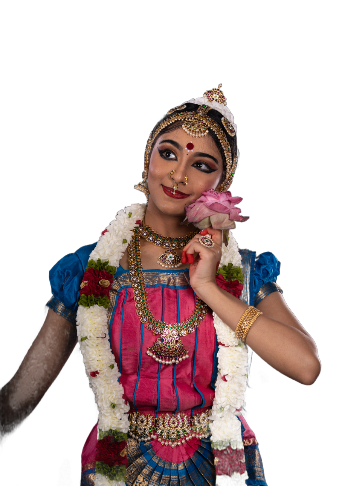
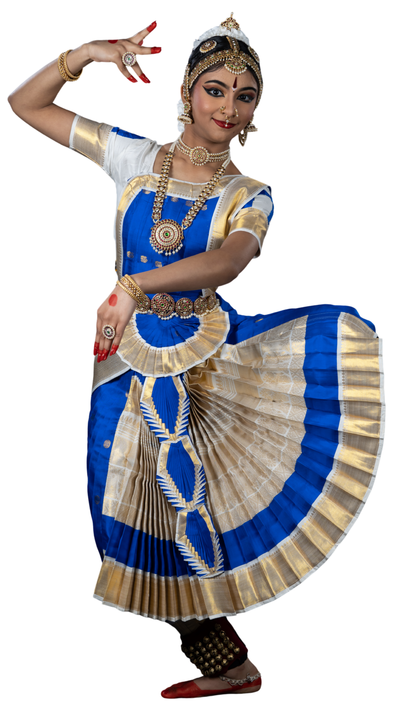
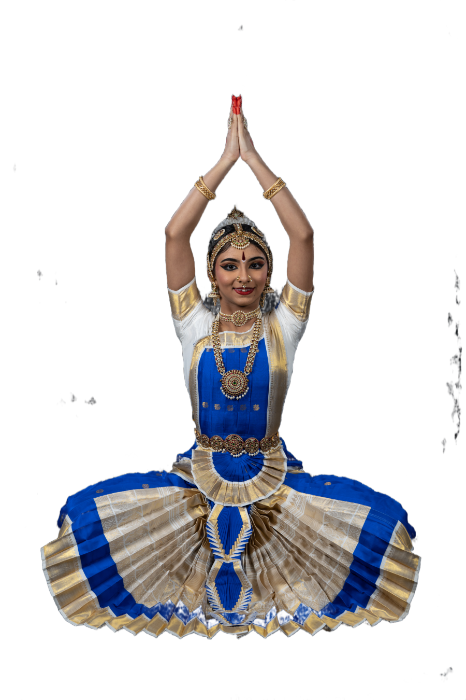
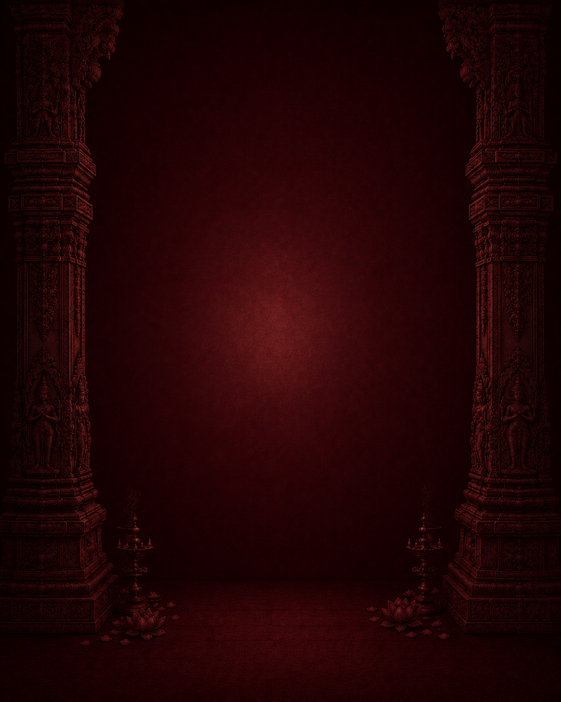
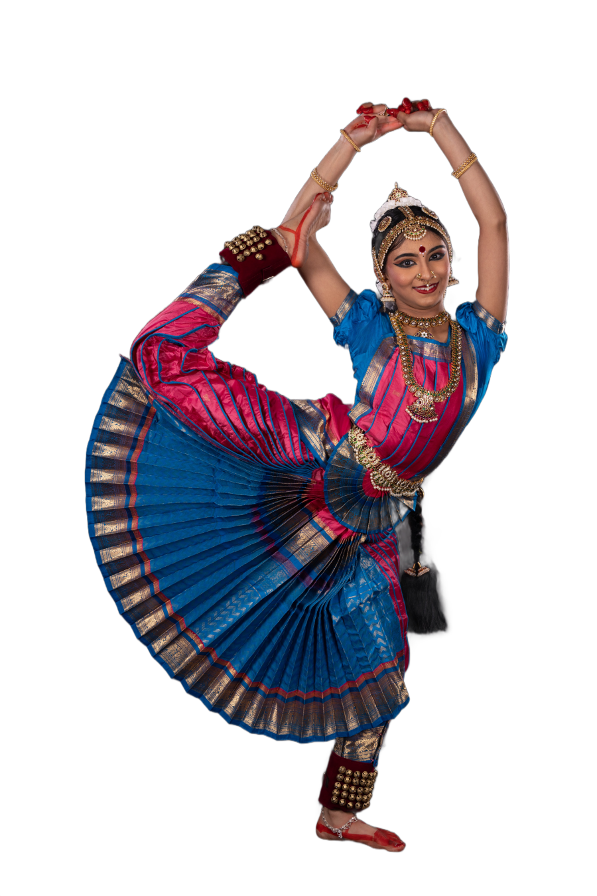
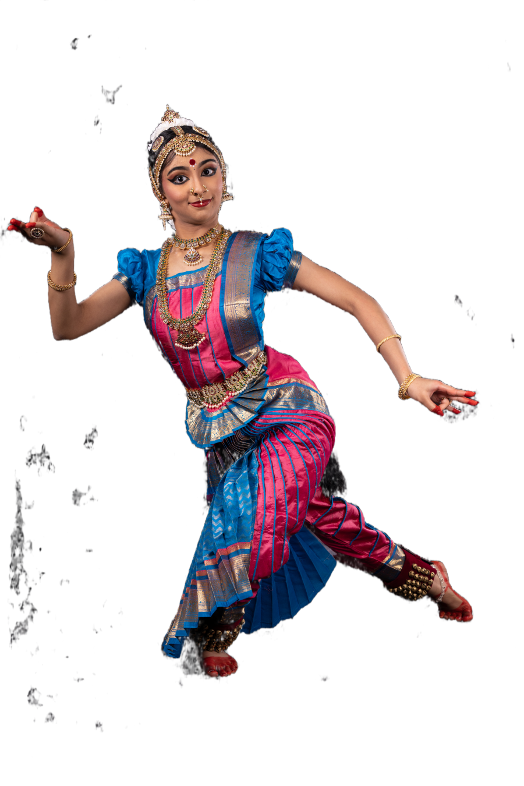
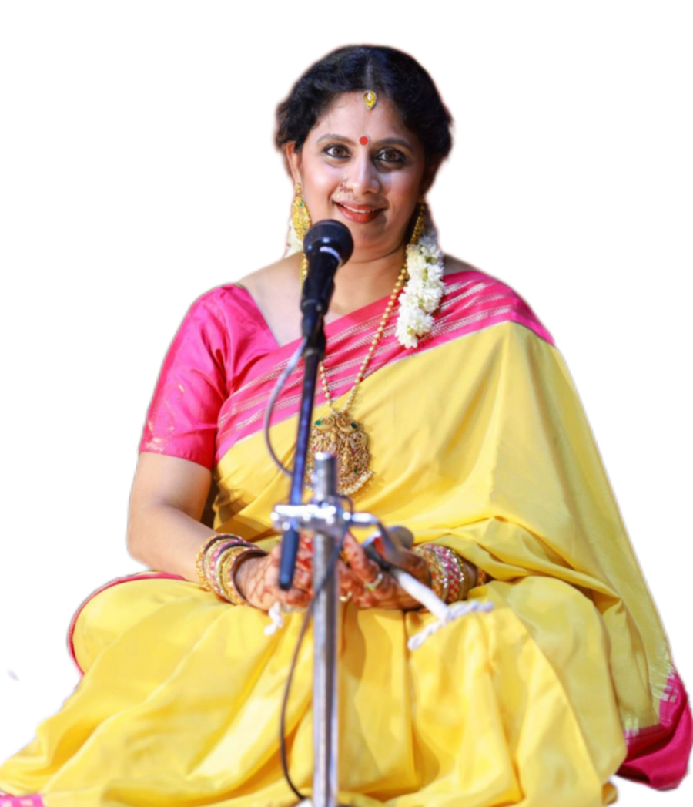
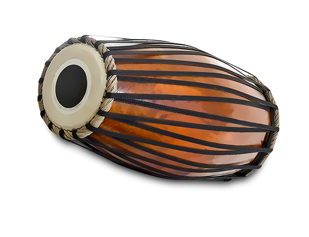

Bharatanatyam Arangetram
JUNE | 28 | 2026 3pm

Naviyasri Rajeshkumar
Disciple of Vidushi Guru Smt. Rashmi Sudheendra
Kum.
NAVARANJITHA PERFORMING ARTS CENTER
Presents


Mt.Olive High School Performing Arts Center, NJ 07836


Bharatanatyam
Bharatanatyam is a premier Indian classical dance form originating from the temples of Tamil Nadu. Rooted in the ancient Sanskrit treatise Natya Shastra, its name represents its fundamental pillars: Bha (Bhava, expression), Ra (Raga, melody), Ta (Tala, rhythm), and Natyam (dance). The performance is a sophisticated blend of three distinct elements:
Nritta (Pure Dance): Dynamic, abstract footwork structured around complex rhythmic cycles, executed in the signature aramandi (half-sitting) posture.
Nritya (Expressive Dance): A combination of rhythm and narrative, where the dancer interprets lyrics using stylized hand gestures (Mudras) and vivid facial expressions.
Natya (Drama): The theatrical element, where the dancer enacts mythological stories and characters.

Arangetram
An Arangetram is the formal debut solo performance of an Indian classical dancer, signaling the completion of years of rigorous training. Derived from the Tamil words Arangam (stage) and Etram (ascending), it literally means "ascending the stage" and marks a student's transition into a mature performer. During this milestone event, the dancer commands the stage for two to three hours, performing a complete Margam (traditional repertoire sequence). Accompanied by a live Carnatic orchestra led by their guru, the dancer must showcase exceptional stamina, flawless rhythmic footwork (Nritta), and nuanced emotional storytelling (Abhinaya). Far from a final graduation, the Arangetram is celebrated as the official beginning of a dancer's lifelong artistic journey
Traditionally performed to Carnatic music, Bharatanatyam seamlessly bridges technical geometric precision with profound emotional storytelling. Today, Bharatanatyam has transcended its geographic origins to become a globally revered art form, passing down intricate footwork (Nritta), symbolic hand gestures (Mudras), and vivid facial expressions (Abhinaya) through generations of dedicated teachers and students.


Guru's Message
Dear Naviya, It has been a wonderful journey watching you grow from a young student into the graceful and confident dancer you are today. Your dedication, punctuality, and commitment to practice have always stood out. Whether it was Nritta or Nrithya, you approached every lesson with sincerity and worked hard to perfect what was taught in class. I especially admire your determination to understand and express Abhinaya with depth and meaning. You never hesitated to ask questions, learn the story behind each piece, and put in the effort needed to bring every character and emotion to life. Beyond the classroom, you continued to learn by observing accomplished dancers and thoughtfully incorporating those qualities into your own artistry. Your Arangetram is a reflection of years of hard work, perseverance, and love for Bharatanatyam. I am incredibly proud of all that you have achieved and wish you a beautiful and successful Arangetram. May this be the beginning of many more accomplishments in your dance journey and in life. With blessings and best wishes, Guru Rashmi Sudheendra

Vidushi Guru Smt. Rashmi Sudheendra
Rashmi’s dedication to her craft is reflected in her remarkable achievements. She secured the first position in the prestigious Bharatanatyam Vidwath program, while also complementing her dance education with a senior certification in Carnatic vocal music. Her involvement in numerous dance dramas under her Guru’s guidance earned her widespread acclaim from both critics and audiences alike.
An Exponent of the Pandanallur Style of Bharatanatyam, Founder & Artistic Director Navaranjitha Performing Arts Center (NRPAC), Guru Smt. Rashmi Sudheendra is a revered and accomplished Bharatanatyam dancer, embodying the grace and precision of the Pandanallur style.

In addition to her artistic prowess, Rashmi holds a Bachelor's Degree in Commerce from the University of Mysore and a Master's in Information Systems from the University of Phoenix, showcasing her diverse academic accomplishments.
Upon moving to the United States in 2000, Rashmi became a cultural ambassador, introducing the beauty of Bharatanatyam to a broader audience. She contributed to various dance schools, choreographed Bharatanatyam and fusion performances, and presented her art at schools, non-profit organizations, and community events across the tri-state area. Despite the demands of raising three children, Rashmi's unwavering passion for dance led her to establish Navaranjitha Performing Arts Center (NRPAC) in 2013.
NRPAC stands as a beacon of excellence in Bharatanatyam education, where Rashmi imparts her deep knowledge to over 100 students, ranging from young children to adults. Her school, known for its rigorous curriculum, not only nurtures students’ artistic abilities but also prepares them for formal Bharatanatyam certifications and examinations. With a focus on the Pandanallur style, Rashmi’s teachings emphasize discipline, grace, and the rich cultural heritage of India.
Many of Rashmi’s students have gone on to complete their Rangapravesha/Arangetram, a significant milestone in a Bharatanatyam dancer's journey, both in the United States and India. These performances are a testament to her students’ mastery under her guidance, as well as Rashmi’s ability to instill in them the confidence, precision, and emotional depth required for such an esteemed achievement.
With more than three decades of experience as both a performer and teacher, Guru Smt. Rashmi Sudheendra’s contributions to Bharatanatyam are profound. Her passion, combined with her ability to inspire and shape the next generation of dancers, cements her status as one of the finest Bharatanatyam teachers in the United States today.
About Guru
Hailing from the culturally rich city of Mysore, Karnataka, Rashmi was surrounded by a vibrant artistic community from a young age. Her passion for the ancient art of Bharatanatyam blossomed early and led her to train under the legendary Guru Dr. Vasundara Doraswamy for over 12 years, mastering both technique and expression.


Invocatory: Melaprapti
Melaprapti is a rhythmic introduction performed at the beginning of a Bharatanatyam dance performance. It helps the dancer prepare the body, focus the mind, and establish a connection with the audience. The dancer begins as the Guru reciting solkattu (rhythmic syllables that represent the beats of the tala). Gradually, adavus (basic dance steps) are incorporated along with the recitation. As the sequence progresses, the speed and complexity increase, leading into a structured jathi (a complex rhythmic pattern). Melaprapti serves as a warm-up, enhances rhythmic control, and builds anticipation for the performance. It also demonstrates the dancer’s command over rhythm and coordination.
Maargam on Devi
Thalam : Adi Rhythm Phrases Composed by Guru Smt. Rashmi Sudheendra
Slokas
Ragam : Gambhira Natay Thalam : Adi
Ragam : Saveri Thalam : Adi
Ragam : Hamsa nandhi Thalam : Adi
Ragam : Saraswathi Thalam : Adi
Ragam : Madhyamavathi Thalam : Adi
Ganesha
Muruga
Shiva

Saraswathi
Lakshmi narayana





Sankeerna Jaathi Alarippu

Alarippu, traditionally the first piece of a Bharatanatyam Margam. The word 'Alarippu' literally means 'to bloom,' symbolizing the dancer’s journey as they open their body and soul like a flower in offering to the divine, the guru, and the audience.
Jatiswaram

Ragam : Ragamalika Thalam : Mishra chaapu Composed by Tanjore Quartet (Chinnayya, Ponayya, Sivanandam, and Vadivelu)

Jatiswaram. as the name suggests, this piece is a seamless fusion of two core elements: Jatis (complex rhythmic patterns) and Swaras (musical notes). Unlike other pieces that tell a story through myths or legends, the Jatiswaram is a work of Nritta, or pure dance. It carries no lyrical meaning, allowing the audience to focus entirely on the aesthetic beauty of the dancer's form. You will see the dancer translate the melodic scales of the Raga into intricate footwork and graceful sculpturesque poses. It is a test of stamina and precision, where the body becomes a visual representation of the music itself—a vibrant, living tapestry of melody and rhythm.
Today’s presentation is a Sankeerna Alarippu. While many are familiar with simpler rhythmic cycles, 'Sankeerna' refers to the complex and rare 9-beat rhythm (tala). This piece is a rigorous study in balance and precision, starting with subtle movements of the eyes and neck, and gradually expanding into full-body movements that command the stage.

Thalam : Sankeerna Chaapu

Shabdham : Devi
Ragam : Ragamalika Thalam : Mishra Chaapu Composed by Sri. Madurai N.Krishna


Varnam : Angayar Kanni
A holy sage sits deep in meditation, seeking peace and spiritual connection. Suddenly, a fierce demon breaks the calm, intent on disturbing the prayers and harming the sage. Just in time, the compassionate goddess appears, confronts the demon, and destroys them, ensuring the sage can continue their penance in safety. Lord Murugan's birth is tied to the Devas needing a commander to defeat the demon Tarakasura, who could only be killed by a son of Shiva. Several sparks were emitted from Shiva's third eye, which were carried by Agni, the fire god, to the Saravana pond. There, they transformed into six babies. Parvati hugs them all, combining them into one being with six faces, which is why he's also known as Karthikeya or Shanmukha.
Ragam : Ragamalika Thalam : Adi Composed by Sri. Laalgudi Jayaraman
This Navarasa Varnam beautifully weaves together mythological episodes from the lives of Lord Shiva and Goddess Parvati, portraying the many emotions that enrich human experience. Through expressive storytelling, the presentation explores nine rasas such as Shringara, Hasya, Karuna, Raudra, Veera, Bhayanaka, Bibhatsa, Adbhuta and Shanta. Each story highlights a distinct emotional flavor — from Parvati’s courageous journey to Kailash and her divine compassion toward devotees, to Shiva’s miraculous deeds and Kali’s fierce destruction of evil. Blending powerful abhinaya with dynamic choreography, the varnam brings the timeless essence of the Navarasas to life.


Devi Shabdam is a beautiful piece! It's often focused on praising the goddess, like describing her divine form, her different avatars, or her role as a protector against evil.




NAVARASA
Hasya (Laughter)
Bhayanaka (Fear)
Adbhuta (Wonder)
Karuna (Compassion)
Veera (Courage)
Shanta (Peace)
Bibhatsa (Disgust)
Raudra (Anger)
Shringara (Love)


Padam : Tripura sundari
Ragam : Ahir bhairavi Thalam : Mishra Chaapu Composed by Kalaimamani Sri. Madurai.R.Muralidaran
Tripura Sundari padam focuses on the goddess as the beauty of the three worlds. It typically describes her radiant form, her compassion, and her role as the supreme power
Thillana & Shudha Nritta
Thillana is a joyous celebration of rhythm, yet it carries a deep spiritual core. Through the lyrics, the dancer calls upon Uma Maheshwari, the all-perfect Mother, asking for her grace to melt their heart in a moment of total, trembling devotion. As the melodic echoes of the Thillana fade, the performance will culminate in Shudha Nritta. In this ancient form of 'pure dance,' we strip away melody and metaphor. What remains is the sacred geometry of the body and the raw power of the Tala. It is the ultimate transition from the emotional surrender of the devotee to the primordial rhythm of the universe.
Ragam : Vijaya vasantham Thalam : Mishra Eka Composed by Kalaimamani Sri. Madurai.R.Muralidaran


Mangalam

During a battle, the demon Raktabija seemed unstoppable because every drop of his blood that spilled created new demons instantly. To stop this endless army, Goddess Kali fiercely drank all his blood before it touched the ground. With no blood left to fall, the copies stopped appearing, and she could finally defeat and kill the original Raktabija.

Mangalam marks the auspicious conclusion of the Arangetram, offering thanks and seeking blessings from all. This dance is a serene and graceful piece, expressing gratitude to the divine, the guru, and the audience. Through elegant movements and heartfelt expressions, the dancer invokes blessings for peace, prosperity and harmony.

Kum. Naviyasri Rajeshkumar
Naviyasri Rajeshkumar is a 15-year-old freshman at the Academy of Health and Medical Sciences, part of the Somerset County Vocational & Technical Schools, where she aspires to pursue a career in healthcare. She began her Bharatanatyam journey at the age of five under the guidance of Guru Smt. Rekha Srinivasan and further refined her training under Guru Dr. Smt. Viji Iyer and Guru Kalaimamani Smt. Bala Devi Chandrasekhar. Since the age of eight, she has been training under the guidance of Guru Smt. Rashmi Sudheendra at Navaranjitha Performing Arts Center.
To deepen her artistic knowledge and broaden her perspective, Naviyasri has attended workshops,Maargam and received mentorship from distinguished gurus, including Guru Kalaimamani Sri. Madurai R. Muralidaran, Guru Dr. Smt. S. Divyasena (through the Cleveland Thyagaraja Festival) and Guru Dr. Smt. Sheela Unnikrishnan.
Over the years, Naviyasri has offered numerous solo and group Nritya Seva performances at esteemed venues such as the Hindu Temple of Delaware, Sri Maha Periyava Temple, Guruvayurappan Temple, Sri Venkateswara Temple, Dhandayudha pani temple and the renowned Cleveland Thyagaraja Festival. She has also shared her art through community cultural events and special Diwali performances for residents of senior living communities in Somerset County.
Her performance repertoire includes participation in acclaimed Bharatanatyam dance productions such as Pattabhirama under Guru Dr. Sri. Sanjay Shantaram; Shakuntalam, Rama Katha, Maha Tripurasundari and Andaal Charithram under Guru Kalaimamani Sri. Madurai R. Muralidaran. Under the guidance of Guru Smt. Kavya Muralidaran, she was part of Shakuntalam presentation in New Jersey, sponsored by Golden elephant. Under the guidance of Guru Dr. Smt. Deepa Mahadevan, she has also performed Rama Katha and Andaal Charithram at multiple venues, including fundraising events supporting cancer research and awareness initiatives.
Naviyasri's dedication and artistry have earned her recognition at several prestigious competitions, including American Natya Idol (Regional and National levels), Gaana Natya Sri International Competition, Vibrance New Jersey Regional Competition, Margazhi Competitions conducted by the All India Dancers Association, New Jersey Natya Sangamam, and Jersey Talent presented by the iconic State Theatre New Jersey.
Her artistic journey expanded further when she was selected as an IndianRaga Fellow, collaborating with talented artists from across the nation. Driven by a passion for creativity and continuous learning, she launched a social media platform to document her artistic growth and explore choreography. This led to her first original choreographic presentation at the Indo-American Dance Festival, marking an exciting new chapter in her dance journey, which was followed by another presentation for NJT's Deepa thiruvizha.

Committed to lifelong learning, Naviyasri continues to deepen her understanding of Bharatanatyam through both practice and theory. Having completed two levels of theory certification through the Madhyam program, she hopes to further her scholarly exploration of this classical art form.
Beyond dance, Naviyasri is an accomplished violinist and an active member of her school’s orchestra program and also a member of Red cross organization. She is equally dedicated to academics and consistently earns Principal’s Honor Roll recognition. Through her commitment to excellence in both the arts and education, she strives to embody the values of discipline, perseverance, creativity, and lifelong learning.
One of Naviyasri’s most memorable achievements was participating in the Advanced Choreography Competition at the Cleveland Thyagaraja Festival, where participants were required to choreograph and present a complete Bharatanatyam piece with live orchestra accompaniment based on music provided only the previous day. Successfully conceptualizing, choreographing, and performing the work within a limited timeframe stands as a significant milestone in her artistic development.
She was subsequently selected by Dance New Jersey to present her original choreography at its Sunday Salon and Show Up & Dance programs hosted at Stockton University.
About Dancer


Vocal : Smt. Neela Ramanuja
Neela hails from a family of musicians and has been trained under very eminent music Gurus for the last 45+ years. Neela is a wonderful music support onstage for Bharatanatyam recitals. Her music support is not only of fine quality but also an example of the nuances of dance music , especially her development of the sangatis for the rendering of verses and supporting singing, for the sancharis of the varnam. Her voice has a unique texture that naturally enhance the beauty of certain ragas when sung by her. When not touring in the US during the summer months, Neela spends her time in India composing and collaborating original music scores with a goal of delivering high quality, inspirational music. Neela has been recognized with award titles such as “Kala arati Ratna and kala Arati Vibhushana “ and “Ganashikhamani”. She owes all the above achievements to The Almighty , her parents, in-laws and for sure her husband Dr. MN Ramanuja.
Mridangam : Sri. S G Pramath Kiran
Orchestra
Behind every Arangetram stands a dedicated Guru whose vision, guidance, and tireless effort shape a student’s artistic journey. Through choreographing each dance item, composing intricate jathis, weaving expressive sanchari bhavas, and guiding with the rhythmic precision of nattuvangam, the Guru brings tradition, discipline, creativity, and storytelling to life. We offer our heartfelt gratitude to our Guru for nurturing not only technique, but the soul, expression, and artistry of Bharatanatyam in every piece she has thoughtfully choreographed for this Arangetram.
Nattuvangam & Choreography : Guru Smt. Rashmi Sudheendra




S G Pramath Kiran, a distinguished percussionist, music producer, and sound engineer, is a leading musician in India. Having embarked on his musical journey at the age of 3, he possesses expertise in both Carnatic and Hindustani music. Renowned for collaborations with top musicians worldwide, he founded Laya Digi Studios, producing numerous records. Notably, he's a featured artist in a Grammy award-winning album Devine Tides by Ricky Kej, showcasing his exceptional musical prowess.

Flute : Sri. A.P. Krishna Prasad
Vidwan A.P. Krishna Prasad is indeed a remarkable artist in the world of Carnatic and popular music. Initiated into music at a remarkably young age of 4 under the tutelage of his father, Vidwan A.V. Prakash, himself a legendary musician, Krishna Prasad's journey in music began with a strong foundation. His skills were further honed under the guidance of the renowned flautist Dr. N. Ramani, which significantly shaped his style and creativity. One of his distinguishing features is his unique style of rendition on the flute, blending influences from Hindustani and Western music traditions. This eclectic approach has elevated him to a prominent position in the music world, enabling him to explore and innovate across genres, from fusion to jugalbandhi, and from blues to jazz.Krishna Prasad's compositions add another dimension to his artistry, particularly in collaborations with dance and other popular art forms. His global appeal is evident through extensive performances in countries such as the USA, Japan, Switzerland, and South Africa, where audiences have appreciated his finesse, dexterity, and speed in intricate musical designs.
Rhythm pad : Sri. S. Pranav Dath


Beyond performing, Krishna Prasad is deeply committed to passing on his knowledge and expertise to aspiring students. He continues his father's legacy as a guru, nurturing hundreds of students worldwide, many of whom have gone on to perform internationally.His journey is a testament to the universal language of music, bridging cultures and continents while maintaining a deep-rooted connection to the rich traditions of Carnatic music.
S. Pranav Dath began his musical journey at just 3.5 years old and has since captivated audiences with his creativity and style. Trained in drums by Vid. B.S. Sukumar and Vid. Arun Kumar, and in mridangam by Vid. N.G. Ravi, he continues to learn under Vid. Anoor Ananthakrishna Sharma. He is also skilled in morsing. Pranav has completed Grade 8 from Trinity College London with top marks and performs across genres including fusion, Carnatic, Hindustani, folk, rock, and jazz. He has collaborated with renowned musicians and performed with leading bands across India, the USA, Canada, the UK, Europe, and the Middle East.

Gratitude
Masters of Ceremony Makeup aritst Event Decor Photo & Videography
: Smt. Nirupama V Chandrasekaran : Smt. Padmashri Ashish : Fairytale Events : Indus photography
Regards
Smt. Saranya Rajeshkumar, Sri. Rajeshkumar Somasekhar, Kum. Vedhaasri Rajeshkumar
With best compliments from grand parents
Smt. Jamunarani & Sri. Somasekhar Smt. Yasodha & Sri. Ramalingam
Thank you